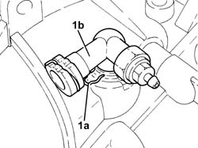
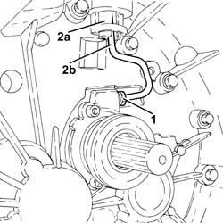
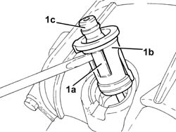
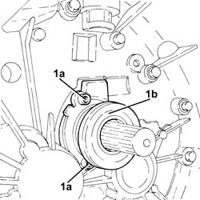
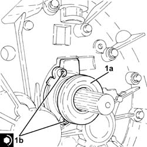
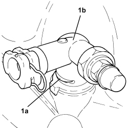
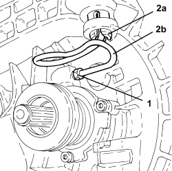
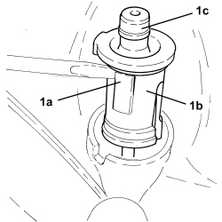
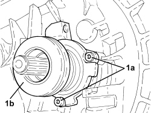

1820B38 HYDRAULIC CLUTCH ACTUATOR WITH COAXIAL CONTROL - R.R WITH GEARBOX REMOVED
- Path
- Procedures > 18 CLUTCH UNIT > 1820 CLUTCH RELEASE CONTROLS > 1820B HYDRAULIC CLUTCH SYSTEM > 1820B38 HYDRAULIC CLUTCH ACTUATOR WITH COAXIAL CONTROL - R.R WITH GEARBOX REMOVED
- Kind
- repair procedure (removal / refitting; the operation number is the code)
- Applies to
- engines: 1.8, 2.2, 1.9 JTD 8v, 1.9 JTD 16v; all production periods
- Interactive page
- https://sloeber94.github.io/elrnDB-fCrm/en/#/194000434
Applies to: engines: 2.2, 1.9 JTD 8v, 1.9 JTD 16v; all production periods
 Removing
Removing
 Refitting
Refitting1. Release the retaining clip (1a) and remove the connector (1b) for the clutch hydraulic actuator.

Applies to: engines: 2.2, 1.9 JTD 8v, 1.9 JTD 16v; all production periods
1. Undo the connector and disconnect the rigid pipe from the clutch hydraulic actuator.
2. Work on the bush (2a) tabs and partly release it together with the rigid pipe (2b).

Applies to: engines: 2.2, 1.9 JTD 8v, 1.9 JTD 16v; all production periods
1. Work on the clips (1a), separate the bush (1b) from the rigid pipe (1c) and remove them.

Applies to: engines: 2.2, 1.9 JTD 8v, 1.9 JTD 16v; all production periods
1. Undo the bolts (1a) and remove clutch hydraulic actuator (1b) complete with seal.

Applies to: engines: 2.2, 1.9 JTD 8v, 1.9 JTD 16v; all production periods
Refitting
Removing- Check the condition of the seal on the clutch hydraulic actuator and lubricate it slightly using transmission fluid.
1. Place the hydraulic clutch actuator (1a) in position and secure it tightening the bolts (1b) to the recommended torque.
Component | Fastening | dia | Value (daNm) | Validity |
|---|---|---|---|---|
Clutch hydraulic actuator | Bolt | - | (gearbox side) 0.6 - 1.2 |

Applies to: engines: 2.2, 1.9 JTD 8v, 1.9 JTD 16v; all production periods
- Place a new bush in its housing on the gearbox casing and check that it is correctly fitted.
- Place the rigid pipe in its housing and fit it on the bush and check that it is correctly fitted.
- Connect the rigid pipe to the clutch hydraulic actuator and tighten the connector to the recommended torque.
Component | Fastening | dia | Value (daNm) | Validity |
|---|---|---|---|---|
Clutch hydraulic actuator rigid pipe | Connector | - | (actuator side) |
- Place the connector for the clutch hydraulic actuator in its housing and secure it using the retaining clip.
Applies to: engines: 1.8; all production periods
Removing
Refitting1. Release the retaining clip (1a) and remove the three-way connector (1b) from the clutch hydraulic actuator.

Applies to: engines: 1.8; all production periods
1. Unscrew the connector and disconnect the hydraulic clutch actuator rigid pipe.
2. Undo the tabs of bush (2a) and partly withdraw together with rigid pipe (2b).

Applies to: engines: 1.8; all production periods
1. Undo clips (1a), separate bush (1b) from rigid pipe (1c) and remove.

Applies to: engines: 1.8; all production periods
1. If necessary, undo the bolts (1a) and remove clutch hydraulic actuator (1b).
- Remove the O-ring.

Applies to: engines: 1.8; all production periods
Refitting
Removing- Check the condition of the clutch hydraulic actuator new O-ring and moisten it with transmission fluid.
- Place the hydraulic clutch actuator in position and secure it tightening the bolts to the recommended torque.
Component | Fastening | dia | Value (daNm) | Validity |
|---|---|---|---|---|
Clutch hydraulic actuator | Bolt | - | (gearbox side) 0.6 - 1.2 |
- Refit a new bush in its seat on the gear casing until it can be heard to click into place.
- Refit the rigid pipe in its seat and insert into the bush until it can be heard to click into place.
- Connect the rigid pipe to the hydraulic clutch actuator and tighten the connector.
- Refit the three-way connector on the clutch hydraulic actuator and secure it with the retaining clip.